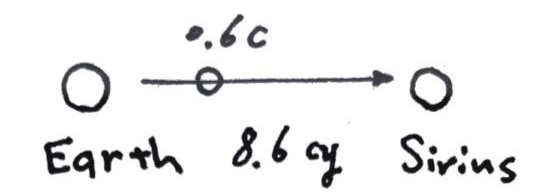

Frivolity: Astrofinance#
天体金融学#
（这个名字大概也不恰当……呃但是我总是沿用最开始的称呼）（其实这周的内容是某种异世界的构想……在我能搜索到的范围内未发现有人研究了这方面嘎嘎）
假设未来的有一天人类已经发展到了整个庞大的星系，星球相互之间的距离甚至要以光年来计算，同时人类开发出了可以与光速量级比拟的高速飞船进行交通；自然会出现很多跨星公司，也需要一个星际的金融系统。让我们来明确一下其运行的逻辑。
首先需要刻画一下这个星际系统。我想所有人类社会依存或居住的地方都可以分为三类状态：静止 static，旋转 rotating，交通 transporting（即从A星系往B星系去）。（总之不能无限制跑远吧）（可以相对于自身所处的参考系而言，也可以统一对于如地球而言）

假设琉球 Rover 负责在地球 Earth 和天狼星 Sirius 之间往复运输，它可能是个飞船（那也应该是相当巨大的社会生态系统了），或者人们已经能够熟练的操纵星球来回流浪……
鉴于相对论的效应，不同速度下的时间流逝是不同的。如果将来的体系仍以地球为中心（也许不是了），我们可以这样来表示 Rover 系的状态：用运行正方向在天球上的指向加上其速度 \(\gamma\) 值，Sirius \(\gamma=\frac{5}{4}\)（或 \(\alpha\ CMa\ 1.25\)）；准确可写为 (06h45m08.9173s, −16°42′58.017″, 1.25)，使用赤经赤纬（GEI Celestial Coordinates）。不同星球上都有着自己正常运转的社会，有自己正常的时间历法，但为了自由大市场，均统一采用年-月-日-时-分-秒的形式。一般来说可以从出发星体处共时开始用历，但重要的只是差值。在同一个系内，各星理论上应同时为好（可以尽量协调，比如成立 ITCA 啥的——指 Interstellar Time-Coordinating Association）。
既然物理定律在所有参考系皆等价成立，不妨猜想所有星球都有相近的生产能力和无风险利率 \(r\) 。即使我们的证券等金融手段为本星结算，套利也会出现：（\(T = 2*8.6/0.6 = 28.67\)）
我们在 Rover 出发时在 Earth 买入并在 Rover 卖出等额的零息债，无论我本人跟随 Rover 还是留在 Earth，在其回来的时候必然存在 \(e^{rT}\) 和 \(e^{r\frac{T}{\gamma}}\) 的差别。
解决方法可以是考虑货币的作用。我们假设存在美元 USD 和琉球美元 RVD。其汇率 \(e\) 在不同时刻会不同，以使上述利差为 0。具体来说，应有 \(\frac{e_t}{e_0} = e^{-r(1-\frac{1}{\gamma})}\)，\(e_t\) 为 \(t\) 时刻美元的间接汇率。
广泛地，我们写
其中 \(\epsilon\) 为间接对数汇率 \(\ln e\)，\(\epsilon_0\) 为其初值。\(Const\) 表明在不同系下，其基准利率 \(r\)、本征时间 \(t\) 和本币汇率 \(\epsilon\) （可统一兑一参考货币如USD）应满足如上恒等关系。
即使异星结算/异系结算 off-planet/off-system settlement，我们在离星货币市场中仍然近似保有此关系。
需要指出的是，就像利率平价关系一样，这个等式只在理想市场情形下成立，真实世界仍然受到交易成本、外汇管制等众多因素的影响，不可能三角仍然存在。
取微分，贴水率 Agio 定义为
那么上文所述的意思则为 \(e\) 受到汇率贴水率折现 \(e(t) = e(0) e^{-at}\)。（\(\tau\) 为外币本征时）
有人可能会质疑这里等式的不对称性，实则与双生子佯谬同工异曲，不再赘述。
同理，我们看一个绕主星旋转的伴星系统。Schwarzschild 线元
不难得到质点运动方程之一
则
其中 \(E\) 守恒，为单位质量的（总）能量，几何单位制。更复杂或一般的情况下则直接对 \(a\) 沿世界线积分。
再举一个例子，我们在 Earth 上的 NYSE 里购买了 Interstellar Inc. 的股票期权，并将交割其在 SUSE（天狼星城证券交易所 Siriurb Stock Exchange，Sirius \(\gamma\)）的标的。
此时的无套利原理应作
其中的 \(H = \ln V(x,t)\) 为对数价值。\(P_1\) 可代入我们的 European Call，\(P_2\) 为 \(B_2\) 和 \(S_2\) 的一个 Portfolio，\(r_1=r_2\)；利用上式，可以如法炮制得到新版的 Black-Scholes 方程
结合边界条件，解得